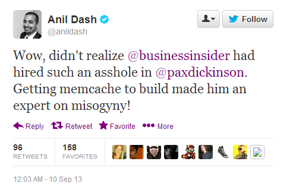
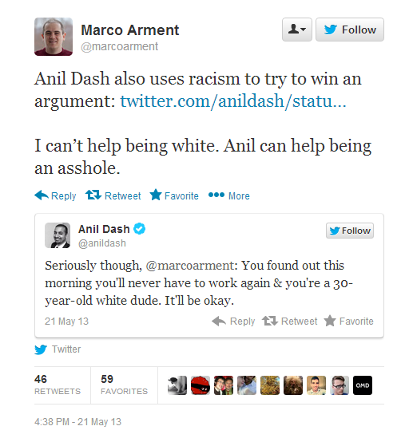

Daryush "Roosh" Valizadeh created ROK in October 2012. You can visit his blog at RooshV.com or follow him on Twitter and Facebook.


A disturbing story has recently developed where two Indian immigrants have coordinated to destroy the livelihood of a white American-borne professional who they didn’t agree with.
Pax Dickinson worked as the Chief Technology Officer for Business Insider. He had a Twitter account where he shared views that went against the liberal narrative of gay marriage, spinster worship, fat acceptance, and open borders.
Anil Dash, an Indian businessman, started the attack with this tweet:

Not six hours later, another Indian individual who works at Gawker, Nitasha Tiku, put up a story that shared the most “offensive” tweets that Pax had posted. Because of how fast Nitasha published the story, I would not be surprised if there was private coordination between Anil and Nitasha before publication. Since Business Insider is run by a CEO who is afraid of pansexual geeks on Twitter, Pax’s employment was terminated. (Nick Denton, the homosexual British man who employs Nitasha, was no doubt satisfied to create turmoil for his main competitor.)
Nothing can be done about Pax’s employment, but I want to take a closer look at the motivations of both Nitasha and Anil, and why they decided to gang up on Pax. First, let’s examine something that Anil wrote on his blog in response to the financial crisis of 2008:
There’s a related question here which no one is asking, which is whether the economic catastrophe facing the global marketplace is a result of a failure of white culture in America. The media is always quick to ask whether problems like violence plaguing minority communities are symptoms of a toxic culture in that community, but I haven’t seen any questions to that effect in regard to this financial meltdown.
Last time I checked, white culture made America, but here we have a man with Indian roots attacking the entire home race. Why is it okay for him to attack white culture, but if anyone attacked “black culture” or “gay culture,” he would be first in line to fight back, crying bigotry, or as in the case of Pax, “misogyny”?
In my line of work (teaching men how to meet women), I have noticed a lot of pent-up frustration from Indian men that is directed at white men. The reason? Indian men are jealous that they can’t lay white women, who they pedestalize to heavenly heights. You can shake your head or laugh, but most Indian men will openly tell you they prefer white women over their own race. On my forum, we have enough angry Indian trolls that we’ve developed a name for them: Indian Race Trolls (IRT).
In spite of Anil’s apparent success in business, I would bet a month of my income that he is angry at not being able to have sex with pretty white women. His wife, while surely a nice woman, is not objectively attractive:
This man has lots of money and half a million Twitter followers, can easily import a pretty Indian bride through his family connections, but instead settles for this individual. In other words, the fact that he is with a homely white girl instead of a pretty Indian girl is a strong indicator to his white woman fetish.
In comes Pax Dickinson, a fellow tech worker who is okay-looking, cocky, confident, successful, and white. Anil is resentful of the white man not only for building the West, compared to—say—a Mumbai slum, but also because he can’t come close to getting the type of woman that his business success would give him if he were white.
The animosity is even more clear when you learn that Anil and Pax used to work in the same building. Did Anil lash out at him when they worked together? Nope. Only when he was safely out of range did he decide to start his internet attack. Typical, passive-aggressive beta male behavior.
Nitasha Tiku, also Indian and a suspected Marxist, has shown a pattern of disliking white men, who she believes are privileged and contain no inherent value. She recently called an app “deplorable” because it helped regular people avoid ghetto areas. In her world, it is unconscionable to think that someone would want to keep themselves safe, but when you consider she lives in a white New York neighborhood, it becomes clear she is a hypocrite who won’t be interacting with poor black people anytime soon. She deemed the ghetto avoidance app “racist” and “classist” because it’s better if everyone is equally poor and unsafe. Why she doesn’t return back to India, where there’s a flatter class system consisting mostly of poor people who defecate on the street, I have no idea.
Here’s a sample of her most recent work:
It’s obvious she hates men, especially white men. It’s amazing that a bonafide misandrist can get a job at the biggest blog network on the internet, denounce whomever she wants, and no one calls out her hatemongering.

Would not fornicate
The irony is that Anil, her partner in Soviet-style denouncement, would never date her because she is Indian, even though they are of the same race, but it’s okay for them to team up and get a white man fired. I suppose in the end it doesn’t matter since she’s a lesbian, and I predict that she’s only one year away from identifying herself as neither a woman or man, as encouraged by the latest liberal trend of declaring yourself to be a gender-neutral carrot, or whatever.
In this drama you have a classic Marxist dyke and a sexually frustrated Indian man joining forces to get a white American man fired within 24 hours. And no one cares besides our perverted corner of the internet. That tells you how much power that minority liberals have gained.
I must state that Pax didn’t do himself any favors with his tweets, but we have to make a decision as a society if we’re going to let angry liberals decide the employment status of natives who actually are contributing to the nation’s economy. The result from all this is one productive man is out of a job while Nitasha can continue fouling up the internet with her Apple laptop (Steve Jobs was a white man) while sitting in Starbucks (Howard Schultz is a white man) and slaving away for Gawker (Nick Denton is a white man), thinking how she is changing the world for women and Indians. At the same time, Anil can ruin a white man’s livelihood because he’s deeply disappointed with his white girlfriend in spite of all the money and status he has. How did this happen to America? I don’t know, but it’s a damn shame we’ve arrived at this point.
UPDATE:
Here is additional evidence of Anil’s anti-white hatred:

Click here to follow the Twitter thread. Also, here’s an interested article titled Anil Dash Has Gone Off the Deep End.
Read Next: 6 Things Indian Guys Have To Understand When Learning Game